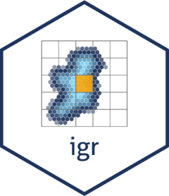

Changelog
Source:NEWS.md
igr 1.0.0
CRAN release: 2025-01-07
-
ig_to_igr()no longer appends separators when converting to 100 km resolution Irish grid references (#13). - Documentation refinements.
- Package considered feature complete and API stable: lifecycle promoted to “stable”.
igr 0.2.0
CRAN release: 2024-08-24
- All functions now support tetrads (2 km squares, also known as “DINTY” system, e.g. “N85H”) (#3).
-
igr_to_ig()andst_igr_to_ig()can (optionally) return centroids of Irish grid references (#8). - All functions have additional hardening against invalid parameters (#5).
- README & vignette refinements including compatibility with latest development version of tmap 4.0.0 (#4).